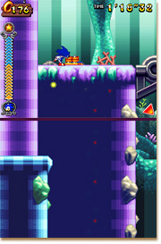
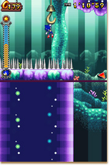
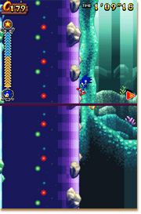
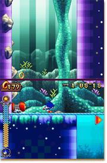

もう１２月２５日は過ぎてるけど、メリークリスマス！！！
ウチは美味しい食べ物と飲み物に囲まれて、幸せやったでー。
みんな楽しめたんかな！？
今回はウチからのクリスマスプレゼントいうことで、また１つメダルのありかを特別に教えるでーーー！！！
ほなっ、さっそくいくでー！
今回はステージ３−２が舞台やで。
写真の場所やけど、ウィンチクレーンにつかまっておりると、トゲが生えてる場所が、このステージで１箇所だけあるやろ？
ウィンチクレーンでその場所までおりたら、右下方向に矢印が表示されると思うけど、ここで右下方向にジャンプしないで、実は左下方向にジャンプするねん。
あっ、ちなみにジャンプの距離が足らへん時はジャンプダッシュを使ってや。

ウィンチクレーンでおりてから左下方向にジャンプしたら、左側の崖に沿って、そのまま下に着地するまで、まっすぐおりてや。
下に着地したら、左側にスプリングがあるやろ？
そこからはスプリングを利用して、迷わず右方向に水面をダッシュするんや。
しばらく進むと宝箱が見えてくるやろ！？
今回のルート以外にも他のルートもあるから、色々と試してみてや。
ほなっ、今年も残りあとわずかやけど、みんな健康に気をつけて、来年もまた会おうなーーー！！！
良いお年をー！
